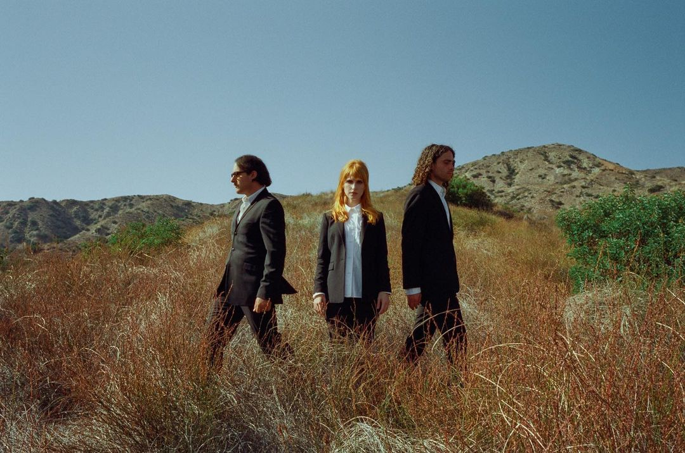
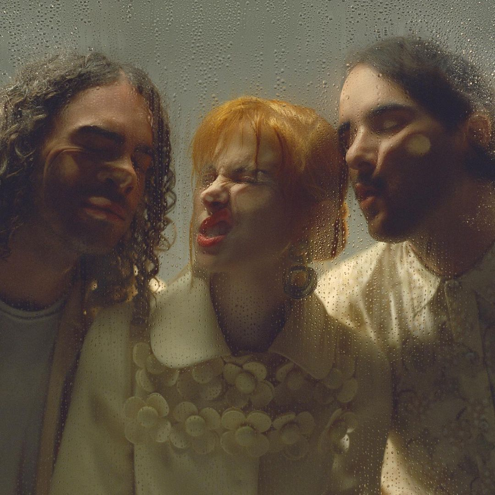
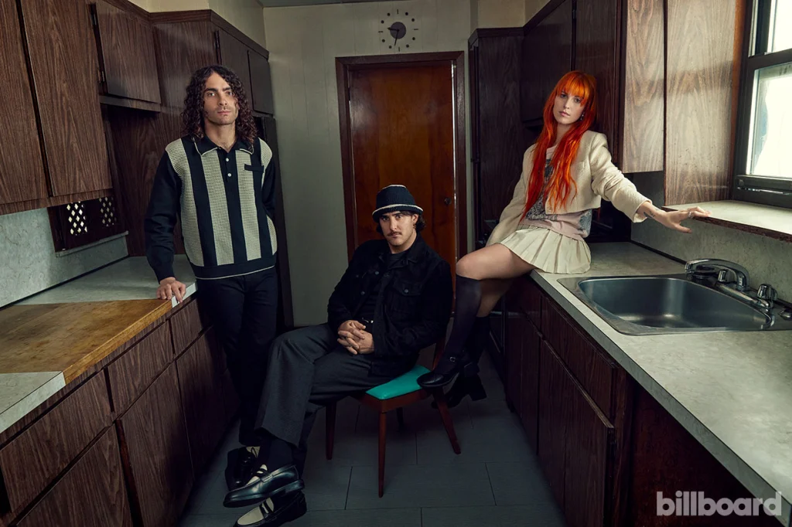

Paramore é uma banda americana de rock formada em Franklin, Tennessee no ano de 2004. A banda já lançou seis álbuns de estúdio: All We Know Is Falling (2005), Riot! (2007), Brand New Eyes (2009), Paramore (2013), After Laughter (2017) e This Is Why (2023). O grupo permaneceu praticamente sem alterações de membros de 2004 a 2010, quando dois membros fundadores saíram. Os integrantes atuais são Hayley Williams, Taylor York e Zac Farro.
Hayley Nichole Williams é a vocalista da banda. Hayley cresceu em Meridian no estado do Mississippi. Filha de família cristã, começou cantando na sua igreja e em paradas de ônibus. Ao longo de sua pré-adolescência começou a ouvir bandas como 'N Sync, influenciando seu estilo musical em rock e pop rock.
Quando tinha treze anos, seus pais divorciaram-se e, então, ela e a sua mãe mudaram-se para Franklin, Tennessee. Durante esse período, ela entrou em uma banda de funk intitulada "The Factory", onde conheceu Jeremy Davis. Após um tempo, Hayley conheceu na escola os irmãos Zac e Josh Farro, que tinham uma banda. Hayley disse-lhes que sabia cantar e eles a convidaram para fazer parte da banda como vocalista.
Em dezembro de 2019, no seu aniversário de 31 anos, Williams afirmou que lançaria o seu primeiro álbum solo, em maio de 2020, com canções novas sendo liberadas em janeiro desse ano. O disco foi intitulado Petals for Armor e seria acompanhado por uma turnê de divulgação. O seu primeiro single, a canção "Simmer", foi lançado em 22 de janeiro de 2020, junto com um vídeo clipe. Em 05 de fevereiro de 2021, Williams lançou um segundo álbum solo, chamado de Flowers for Vases / Descansos. Esse foi o primeiro álbum em que a cantora escreveu todas as letras e tocou todos os instrumentos de um projeto, sendo um marco em sua carreira.
Taylor Benjamin York é um músico, compositor e produtor americano. Ele atualmente toca na banda de rock alternativo Paramore. Em 15 de junho de 2009, a banda Paramore anunciou que Taylor York tinha oficialmente se tornado membro da mesma.
Desde a saída dos irmãos Farro em 2010, York assumiu o papel de compositor principal do Paramore ao lado de Hayley Williams.
Em 2015, a vocalista Hayley Williams deixou silenciosamente o Paramore por um breve período devido à depressão. York então permaneceu o único membro do Paramore, já que o baixista Jeremy Davis deixou a banda e envolveu York e Williams em uma ação judicial sobre propriedade e autoria de músicas no quarto álbum do Paramore. Ela escreveu a demo de "Forgiveness", uma música do After Laughter. Williams elogiou York como alguém que ajudou a mantê-la viva durante a depressão. Ela também cita que ele é a razão pela qual o Paramore ainda é uma banda e não terminou.
Atualmente, York também trabalha como produtor musical, já tendo produzido em 2019 o primeiro álbum da companheira de banda Hayley Williams, o disco Petals for Armor.
Zachary Wayne Farro é um baterista e músico estadunidense. Zac foi membro da banda de rock alternativo Paramore mas ele e seu irmão, Josh Farro, anunciaram sua saída do grupo em 18 de dezembro de 2010. Eles formaram uma nova banda, Novel American, que existiu de 2011 a 2014 e nunca chegaram a gravar um trabalho juntos. Contudo, em fevereiro de 2017, ele anunciou seu retorno ao grupo Paramore.
Além do Paramore, Zac também tem um projeto alternativo chamado HalfNoise, onde o mesmo compõe e canta.
